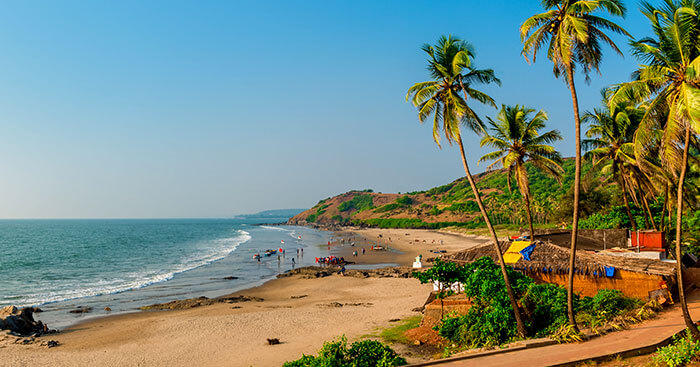
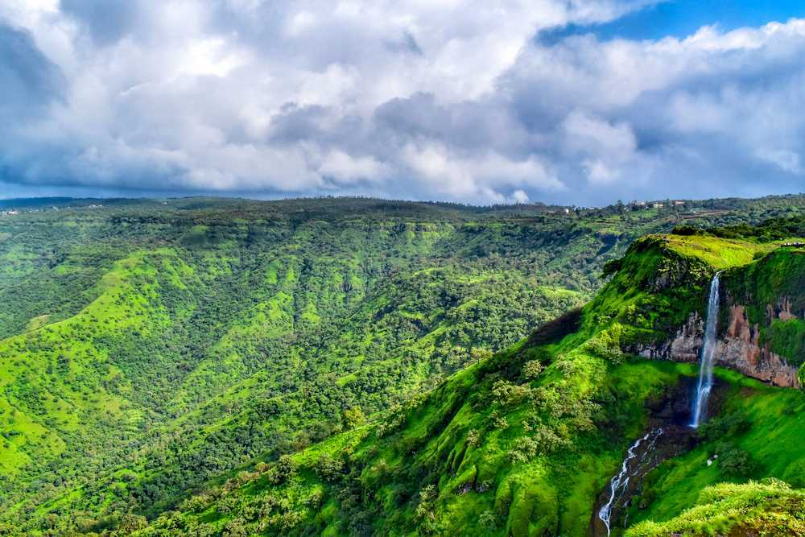
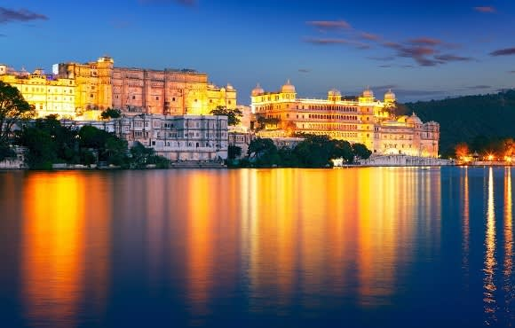
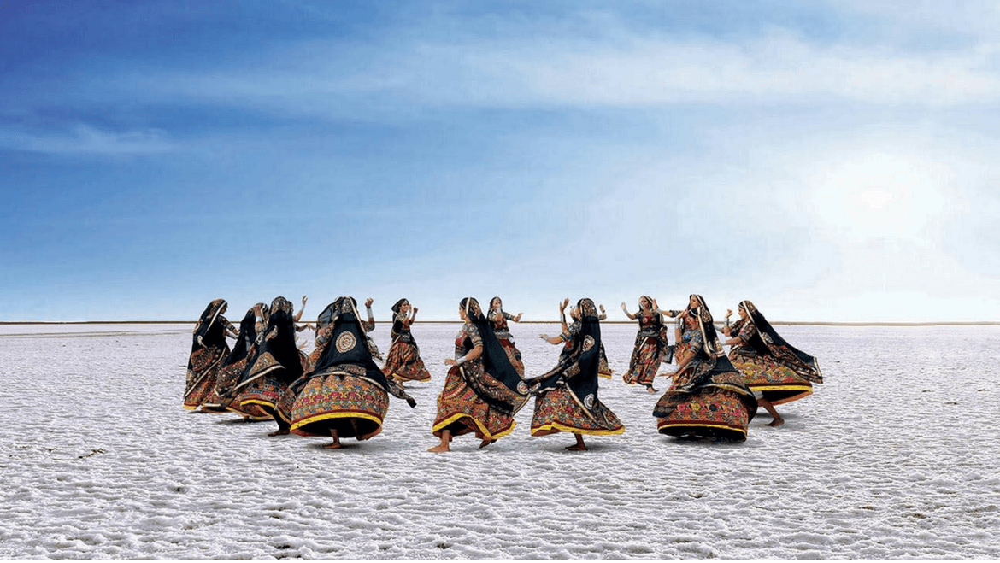

Goa

Goa is a state on the southwestern coast of India within the region known as the Konkan, and geographically separated from the Deccan highlands by the Western Ghats. It is surrounded by the Indian states of Maharashtra to the north and Karnataka to the east and south, with the Arabian Sea forming its western coast. It is India's smallest state by area and its fourth-smallest by population. Goa has the highest GDP per capita among all Indian states, two and a half times as high as the GDP per capita of the country as a whole.The Eleventh Finance Commission of India named Goa the best-placed state because of its infrastructure, and India’s National Commission on Population rated it as having the best quality of life in India (based on the commission’s “12 Indicators”). Panaji is the state's capital, while Vasco da Gama is its largest city. The historic city of Margão in Goa still exhibits the cultural influence of the Portuguese, who first voyaged to the subcontinent in the early 16th century as merchants, and conquered it soon thereafter, whereupon Goa became an overseas territory of the Portuguese Empire, part of what was then known as Portuguese India, and remained as such for about 450 years, until it was annexed by India in 1961. Goa’s official language, which is spoken by a majority of its inhabitants, is Konkani. Goa is visited by large numbers of international and domestic tourists each year because of its white-sand beaches, active nightlife, places of worship, and World Heritage-listed architecture. It also has rich flora and fauna because it lies on the Western Ghats range, a biodiversity hotspot.
Mahabaleshwar

Mahabaleshwar is located on the mountainous Sahyadri range of the Western ghats that run North to south along western coast of India. The coordinates of the town are 17.9237°N 73.6586°E.Mahabaleshwar is a vast plateau measuring 150 km2 (58 sq mi), bound by valleys on all sides. It reaches a height of 1,439 m (4,721 ft) at its highest peak above sea level, known as Wilson/Sunrise Point The town is about 120 km (75 mi) southwest of Pune and 285 km (177 mi) from Mumbai, .Mahabaleshwar comprises three villages: Malcolm Peth, Old "Kshetra" Mahabaleshwar and part of the Shindola village. Mahabaleshwar region is the source of the Krishna River that flows across Maharashtra, Karnataka, Telangana and Andhra Pradesh. The legendary source of the river is a spout from the mouth of a statue of a cow in the ancient temple of Mahadev in Old Mahabaleshwar.Legend has it that Krishna is Lord Vishnu himself as a result of a curse on the trimurti by Savitri. Also, its tributaries Venna and Koyna are said to be Lord Shiva and Lord Brahma themselves. An interesting thing to notice is that 3 other rivers come out from the cow's mouth apart from Krishna and they all travel some distance before merging into Krishna which flows East towards the Bay of Bengal.These rivers are the Koyna, Venna (Veni) and Gayatri. The Savitri river flows Westward via Mahad to the Arabian Sea. Climate of the area is suitable for cultivation of strawberries, Mahabaleshwar strawberry contributes to about 85 percent of the total strawberry production in the country.It also received the geographical indication (GI) tag in 2010. Very heavy rainfall is a normal occurrence during monsoons. During July, 10–12 days of continuous rains with 100–200 mm rains each day can be seen each year .There were reports of ice and ground frost formation around Venna Lake in 2018 On August 7th 2019 Mahabaleshwar recorded 330mm of rain in 24 Hours causing landslides Mahabaleshwar is described as the "New Candidate for the wettest place in the world" the titile currently held by Cherrapunji.
Udaipur

Udaipur also known as the "City of Lakes", is a city in the state of Rajasthan, India. It is the historic capital of the kingdom of Mewar in the former Rajputana Agency. It was founded in 1558 by Udai Singh II of the Sisodia clan of Rajput,when he shifted his capital from the city of Chittorgarh to Udaipur after Chittorgarh was besieged by Akbar. It remained as the capital city till 1818 when it became a British princely state,and thereafter the Mewar province became a part of Rajasthan when India gained independence in 1947. Dubbed "the most romantic spot on the continent of India" by British administrator James Tod,Udaipur is a tourist destination and is known for its history, culture, scenic locations and the Rajput-era palaces. It is popularly known as the "City of Lakes" because of its sophisticated lake system. It has seven lakes surrounding the city. Five of the major lakes, namely, Fateh Sagar Lake, Lake Pichola, Swaroop Sagar Lake, Rangsagar and Doodh Talai Lake have been included under the restoration project of the National Lake Conservation Plan (NLCP) of the Government of India.Besides lakes, Udaipur is also known for its historic forts and palaces, museums, galleries, natural locations and gardens, architectural temples, as well as traditional fairs, festivals and structures.The Udaipur economy is primarily driven by tourism, though minerals, marble processing, chemical manufacturing and development, electronic manufacturing and the handicraft industry are also contributors. Udaipur hosts several state and regional public offices, including offices of Director of Mines and Geology, Commissioner of Excise, Commissioner of Tribal Area Development, Hindustan Zinc Limited, and Rajasthan State Mines and Mineral Corporation Limited. Besides, Udaipur is rising as educational hub as well, with 5 Universities, 14 colleges and more than 160 high schools. Udaipur is home to IIM Udaipur, the fifth best management institution in the country according to NIRF ranking released by the MHRD.
Kutch

The history of Kutch can be traced back to prehistoric times. There are several sites related to the Indus valley civilization in the region, and it is mentioned in Hindu mythology. In historic times, Kutch is mentioned in Greek writings during Alexander. It was ruled by the Buddhist Indian King with Greek ancestry from his mother's side Menander I of Greco-Bactrian Kingdom which was overthrown by Indo-Scythians followed by Maurya Empire and Sakas. In the first century, it was under Western Satraps followed by Gupta Empire. By the fifth century, Maitraka of Valabhi took over from which its close association with the ruling clans of Gujarat started. The Chavdas ruled the eastern and central parts by the seventh century but came under Chaulukyas by the tenth century. After the fall of Chaulukya, the Vaghelas ruled the state. By the thirteenth century, the Vaghelas controlled the whole of Kutch and adopted a new dynastic identity, Jadeja. For three centuries, Kutch was divided and ruled by three different branches of the Jadeja brothers. In the sixteenth century, Kutch was unified under one rule by Rao Khengarji I of these branches, and his direct descendants ruled for two centuries and had a good relationship with the Gujarat Sultanate and Mughals. One of his descendants, Rayadhan II, left three sons, of whom two died, and a third son, Pragmal Ji took over the state and founded the current lineage of rulers at the start of the seventeenth century. The descendants of the other brothers founded states in Kathiawar. After turbulent periods and battles with the armies of Sindh, the state was stabilized in the middle of the eighteenth century by a council known as Bar Bhayat ni Jamat who placed Rao as a titular head and ruled independently. The state accepted the sovereignty of the British East India Company in 1819, when Kutch was defeated in battle. The state was devastated by an earthquake in 1819. The state stabilized and flourished in business under subsequent rulers.
Diu and Daman

For over 450 years, the coastal enclaves of Daman and Diu on the Arabian Sea coast were part of Portuguese India, along with Goa and Dadra and Nagar Haveli. Goa, Daman and Diu were incorporated into the Republic of India on 19 December 1961, by military conquest. Portugal did not recognise the Indian annexation of these territories until the Carnation Revolution of 1974. The territory has also been ruled by Kolis. The territory of Goa, Daman and Diu was administered as a single union territory until 30 May 1987, when Goa was granted statehood, leaving Daman and Diu as a separate union territory. Each enclave constituted one of the union territory's two districts. Daman and Diu are approximately 650 kilometres away from each other by road. On 3 November 2019, Daman Collector Rakesh Minhas issued a Section 144 order banning peaceful assembly of four or more persons, slogan-shouting and the use of loudspeakers across the entire district and ordered the conversion of Government High School, Bhimpore and the Government Sarvottam High School, Moti Daman into 'temporary jails'. This was in response to a land ownership dispute between the local indigenous fishing community and the local administration that had confiscated their land and bulldozed their homes. The ensuing 2019 Daman Indigenous Land Clearing Protests resulted with the detention of 70 protesters in the 'temporary jails' and another 8 arrests. Few of the adivasi fisherfolk were rehoused whilst most languished traumatised and homeless on the streets near the rubble of their razed homes. In December 2019, the Parliament of India passed legislation to merge Daman and Diu with the nearby union territory of Dadra and Nagar Haveli to create a new union territory to be known as Dadra and Nagar Haveli and Daman and Diu.